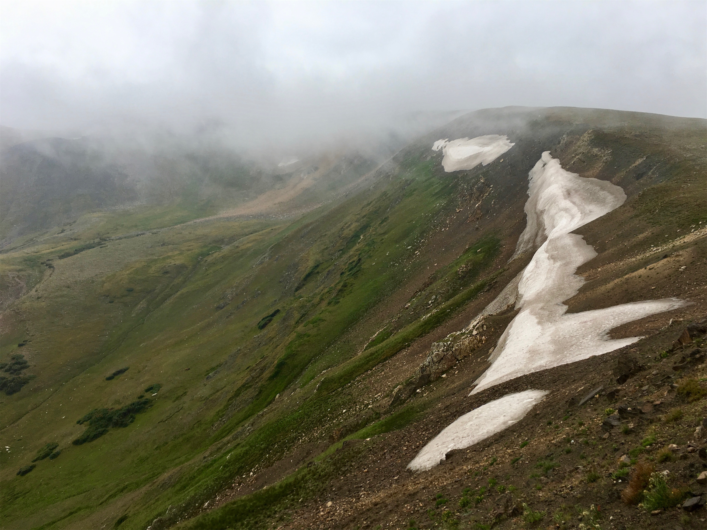
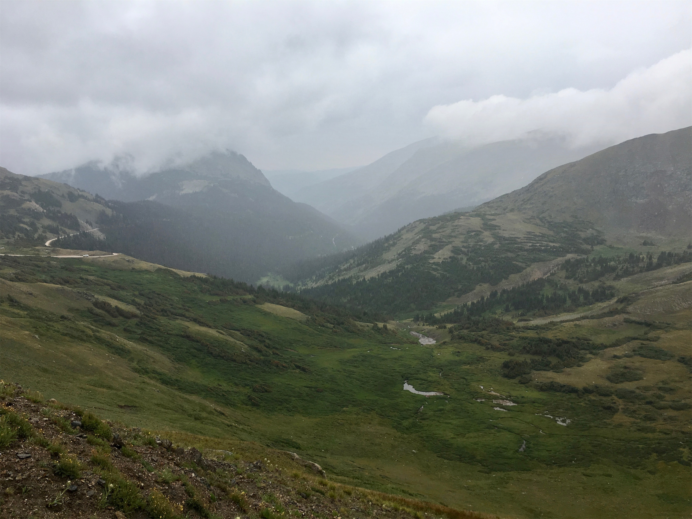
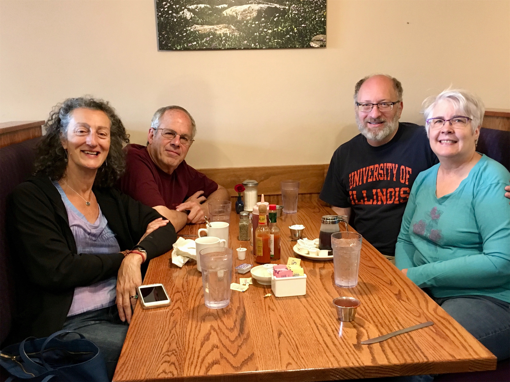
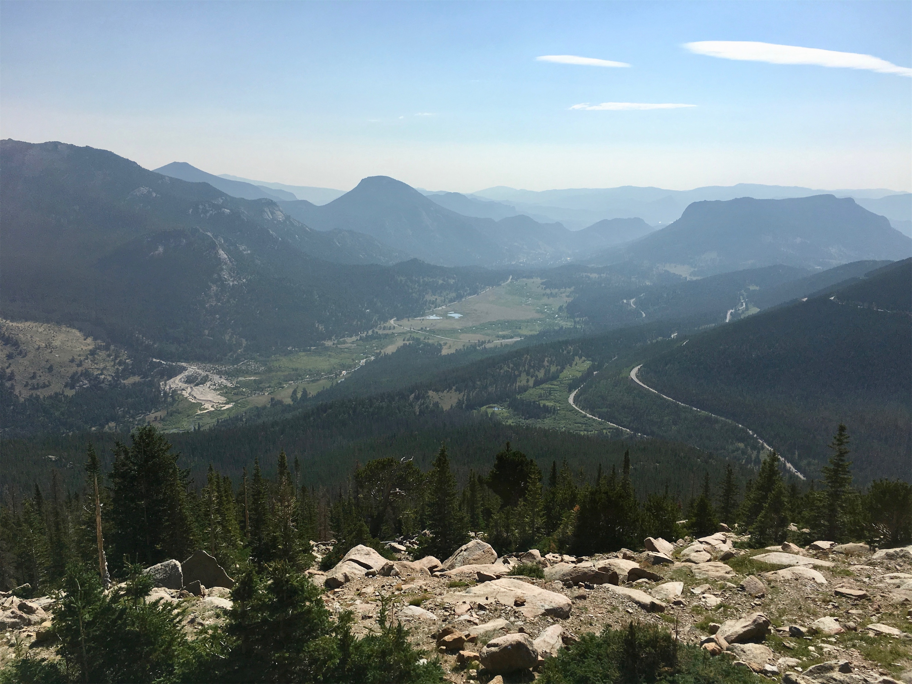

Friday, Aug 3, 2018, 10:43 AM MDT
Rocky Mountain National Park, Granby, CO, United States
55°F Cloudy
55°F Cloudy
![]()
8/2 Great Sand Dunes Visitor Center, CO -> Hot Sulphur Springs, CO 232 mi, 5.5 hr
8/3 Hot Sulphur Springs, CO -> Kawuneeche Visitor Center, CO 27 mi, 0.5 hr
8/3 Kawuneeche Visitor Center, CO -> Estes Park, CO 47 mi, 2.5 hr
Trip Total: 10,625 mi
From the Great Sand Dunes, we made our way north through the San Luis Valley, crossing the Continental Divide from east to west at Poncha Pass, at a lowly 9,000 feet, following the Arkansas River up to Hot Sulphur Springs, our overnight stay. While the hotel wasn’t very good, we ate a surprisingly excellent mountain tapas dinner at The Dean Public House.
The next morning, we awoke to a steady rain, and headed for our drive along the famous Trail Ridge Road through the Park, the 50-mile long, highest paved road in the US (at over 12,000 feet), which is only open Memorial Day through Labor Day. We stopped at the first visitor center on the west side, and the ranger told us that the visibility in the pass was down to 15 feet and deteriorating, so we decided to head out before it got even worse. Even in the rain, we saw many elk, several deer, and a moose. We could see that we were steadily coming closer to the cloud deck, and finally hit it and entered into the expected terrible visibility. Although, this also meant that Deb couldn’t see the drop offs on the guardrail-less road edge! It was disappointing to not be able to see the normally amazing scenery from this road, marking the first time on our trip that weather impacted a park visit. Eventually, we reached the tree line and the tundra, and we stopped at the Alpine Visitor Center, where the visibility eased up enough that we got a few photos. The temperature dropped to 41 degrees as we climbed. We continued down the eastern slope of the Rockies to our overnight stay in Estes Park, at a cabin right on a stream.
We were shortly joined by friends Mzia and Michael, who live near Boulder, and we had a nice dinner and a pre-sunset drive back into the park, with clearer weather, to see Horseshoe Park and a few animals. The next morning, much clearer but still a bit hazy from wildfire smoke, Michael (a retired geology professor) drove us back up Trail Ridge Road to Rainbow Curve, where we got the view of the valley below that we missed the previous day, along with expert descriptions of the geological features.




